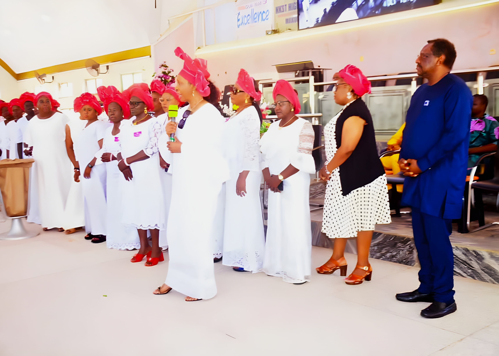

A Thanksgiving Service Marks the Grand Finale of BBCSI’s 10th Anniversary Celebration
·
BBCSI
Communications Team

The seven-day celebration marking the 10th anniversary of the Benue Breast Cancer and Support Initiative (BBCSI) came to a glorious and memorable close on Day 7 with a Thanksgiving Service at the NKST High Level English Service, which commenced at 7:30 a.m. The service provided a fitting opportunity to return all glory and gratitude to God for His faithfulness, guidance, protection, and provision throughout BBCSI’s ten-year journey of service, compassion, and commitment to community development.
It was a moment of reflection, appreciation, and renewed dedication to the vision and mission of BBCSI as the organisation celebrated a decade of making meaningful contributions to the Benue community.
Recognition and Appreciation from the Church
One of the highlights of the Thanksgiving Service was the recognition accorded to BBCSI by the church leadership. The church officials graciously acknowledged the organisation’s presence and invited its representatives to briefly address the congregation about BBCSI, its work, and its impact in communities.
This gesture was deeply appreciated, as it provided an opportunity to share the BBCSI story with the congregation, highlight its commitment to charitable service and social impact, and create greater awareness of its activities and vision.
BBCSI is grateful to the leadership of NKST High Level English Service for this warm reception, recognition, and opportunity to share its work with the church community.
Special Appreciation to Our Patron, Ambassador Steve Ugbah
As the anniversary activities drew to a close, BBCSI also recognised with profound gratitude the exceptional support of its Patron, Ambassador Steve Ugbah. Ambassador Ugbah’s support throughout the anniversary celebration went beyond words of encouragement. He made a significant financial contribution towards the BBCSI Thanksgiving Service and generously provided transportation for the organisation throughout the entire week of anniversary activities.
His generosity, commitment, and unwavering support contributed immensely to the successful execution of the seven-day celebration. BBCSI deeply appreciates his continued belief in its vision and his practical demonstration of commitment to the organisation’s growth and impact. His support is a reminder of the importance of having dedicated individuals who believe in the power of service and are willing to contribute meaningfully to its advancement.
Thank you, Ambassador Steve Ugbah, for standing with BBCSI and making this milestone celebration even more memorable.
A Journey Back Home, with Hearts Full of Gratitude
Following the Thanksgiving Service, delegates who had travelled from different locations to participate in the week-long anniversary activities began their journeys back to their respective destinations. Participants departed for Adikpo, Gboko, Konshisha, and Otukpo, bringing the seven-day celebration to a close.
Though the physical gathering ended, the memories, friendships, renewed relationships, shared experiences, and inspiration from the week will remain with everyone who participated.
Ten Years Down, a Greater Journey Ahead!
The conclusion of the 10th anniversary celebration marks not just the end of a week of activities but the beginning of another chapter in BBCSI’s journey. From a decade of service to the communities to renewed commitment to charity, social responsibility, and sustainable impact, BBCSI looks forward to building on its achievements and reaching even greater heights.
We extend our heartfelt appreciation to everyone who contributed to the success of the anniversary celebration: our patron, trustees, directors, members, sponsors, donors, partners, volunteers, sympathizers, and all friends of BBCSI. Above all, we return all glory to God for ten remarkable years and for bringing the seven-day celebration to a successful conclusion.
Ten Years of Impact.
Ten Years of Service.
Ten Years of God’s Faithfulness.
BBCSI at 10 — Celebrating the Past, Inspiring the Present, and Building a Greater Future.